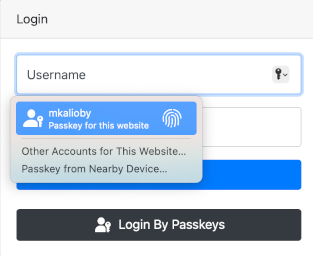

Django Template Integration
-
Add passkeys to urls.py
To match the look and feel of your project, Passkeys includesbase.htmlbut it needs blocks namedhead&contentto added its content to it.Customizing Templates
- You can override
passkeys/base.htmlwhich is used bypasskeys/manage.htmlso you can control the styling better and currentpasskeys/base.htmlextendsbase.html - Currently,
passKeys/base.htmlneeds jQuery and bootstrap.
- You can override
-
Somewhere in your app, add a link to 'passkeys:home'
-
In your login view, change the authenticate call to include the request as follows
-
Finally, in your login.html
- Give an id to your login form e.g.
loginForm, the id should be provided when callingauthnfunction - Inside the form, add
For more information about how to set it up, please see the 'example' app and the EXAMPLE.md document.
<input type="hidden" name="passkeys" id="passkeys"/> <button class="btn btn-block btn-dark" type="button" onclick="authn('loginForm')"><img src="{% static 'passkeys/imgs/FIDO-Passkey_Icon-White.png' %}" style="width: 24px"/> Login by Passkeys </button> {%include 'passkeys/passkeys.js' %}
- Give an id to your login form e.g.
Check if the user can be enrolled for a platform authenticator
If you want to check if the user can be enrolled to use a platform authenticator, you can do the following in your main page.
<div id="pk" class="alert alert-info" style="display: none">Your device supports passkeys, <a href="{%url 'passkeys:enroll'%}">Enroll</a> </div>
<script type="text/javascript">
function register_pk()
{
$('#pk').show();
}
{% include 'passkeys/check.js'%}
$(document).ready(check_passkey(true,register_pk))
</script>
platform_authenticator: if the service requires only a platform authenticator (e.g TouchID, Windows Hello or Android SafetyNet)success_func: function to call if a platform authenticator is found or if the user didn't login by a passkeyfail_func: function to call if no platform authenticator is found (optional).
Using Conditional UI
Conditional UI is a way for the browser to prompt the user to use the passkey to login to the system as shown in

Starting version v1.2. you can use Conditional UI by adding the following to your login page
-
Add
2. Add the following to the page js. wherewebauthnto autocomplete of the username field as shown below.loginFormis name of your login form.
Using Immediate Mediation
Immediate Mediation is an extension to WebAuthn API that allows the browser to immediately prompt the user to use password/passkeys without the need of a login form. This is currently supported by Google Chrome 144+ and soon on Android devices.
You can watch demo presented by Google
To enable this feature in your pages add a new hidden form in your page that the passkeys can use to send to the server.
{%include 'passkeys/passkeys.js' allow_password=True %}
<form id="loginForm" action="{% url 'login' %}" method="post" style="display: none">
{% csrf_token %}
<input type="hidden" id="passkeys" name="passkeys" />
<input type="hidden" id="username" name="username" />
<input type="hidden" id="password" name="password" />
<input type="hidden" name="next" value="{{ request.get_full_path }}" />
</form>
You can check public.html for an example of how to configure it.
Important
Note: setting allow_password to True (default False) will allow the user to login by password if that what is stored in the password manager, otherwise, the user will be forced to login by passkeys.
Warning
if no credentials are found a call to a js function named no_credentials_found() is perform, make sure to implement this js function.